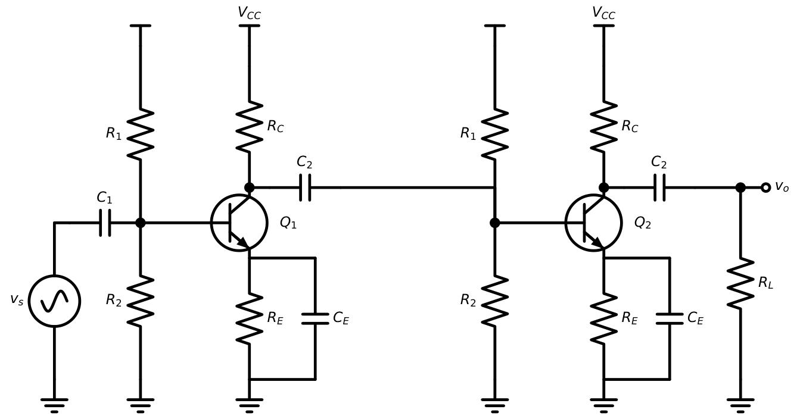
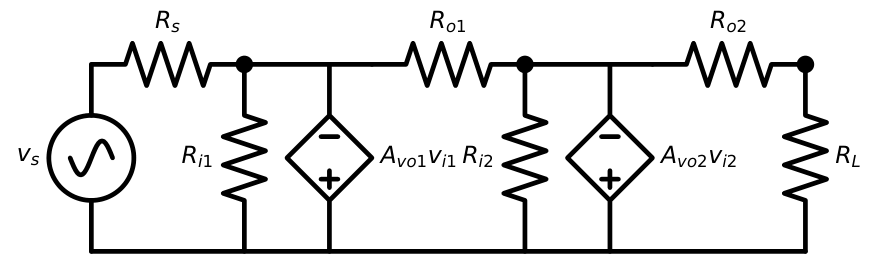
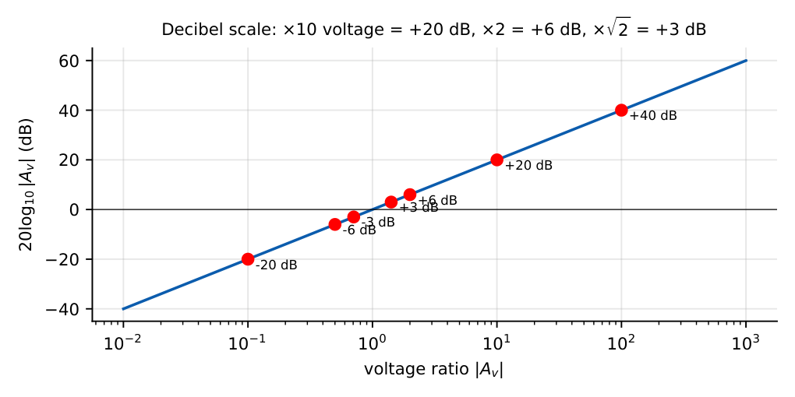

AC Coupling and Multistage Amplifiers
In this chapter
10.1 AC coupling concept
Real amplifiers must pass the signal but not disturb each other’s DC bias. A series capacitor blocks DC and passes AC; a shunt capacitor to ground provides an AC short while leaving the DC unchanged. The capacitor reactance is \(X_C=1/(2\pi fC)\).
- At DC (\(f=0\)): \(X_C=\infty\), so the capacitor is an open circuit.
- At midband: \(X_C\approx0\), a short circuit.
- At low frequency: \(X_C\) becomes comparable to the surrounding resistance, and the gain falls (Chapter 11).
10.2 Coupling capacitors
\(C_1\) (input) and \(C_2\) (output) in the CE amplifier of Chapter 9 isolate the DC bias of the amplifier from the source and load. Together with the resistance they see, each forms a high-pass filter:
\(f_{L1}=\dfrac1{2\pi(R_s+R_i)C_1}\), \(f_{L2}=\dfrac1{2\pi(R_o+R_L)C_2}\)
Design rule: choose \(C\) so that \(X_C\le\dfrac{R_{seen}}{10}\) at the lowest signal frequency.
\(R_s=1\) k, \(R_i=1.09\) k, want \(f_{L1}\le10\) Hz: \(C_1\ge1/(2\pi\times10\times2.09\,\mathrm k)=7.6\ \mu\)F; choose \(10\ \mu\)F.
10.3 Bypass capacitors
\(C_E\) across \(R_E\) gives an AC short at the emitter so the gain is \(-g_mR_C'\) rather than \(-R_C'/R_E\). It sees a very low resistance, \(R_{seen}=R_E\|\left(r_e+\dfrac{R_s'}{\beta+1}\right)\), so it must be large.
\(r_e=12.3\ \Omega\), \(R_s'=0.9\) k, \(\beta=100\): \(R_{seen}=1000\|(12.3+8.9)=20.8\ \Omega\). For \(f_{LE}=100\) Hz: \(C_E=1/(2\pi\times100\times20.8)=76\ \mu\)F; for good margin use \(C_E\ge10/(2\pi f_L\,20.8)\approx760\ \mu\)F (a 10\(\times\) rule) if \(f_L\) must be \(\le100\) Hz for the whole amplifier.
10.4 DC and AC equivalent circuits
| DC equivalent | AC (small-signal) equivalent | |
|---|---|---|
| Capacitors | open circuit | short circuit (midband) |
| Inductors | short circuit | open circuit |
| DC voltage sources | kept | replaced by short (AC ground) |
| DC current sources | kept | replaced by open circuit |
| Transistor | \(V_{BE}=0.7\), \(I_C=\beta I_B\) | hybrid-\(\pi\) (or T) model |


The AC load seen by the collector is \(R_C\|R_L\), not \(R_C\) alone (the coupling capacitor connects \(R_L\) at AC). So the AC load line is steeper than the DC load line, and the maximum symmetrical swing is limited by whichever of cutoff or saturation is reached first: \(v_{o,max}=\min\{I_{CQ}R_{ac},\,V_{CEQ}\}\) where \(R_{ac}=R_C\|R_L\).
10.5 Cascaded amplifiers

Each stage is designed to be biased independently; the coupling capacitor lets the two DC operating points be different.
10.6 Overall voltage gain
Model each stage by \((R_i,\ A_{vo},\ R_o)\) (input resistance, open-circuit voltage gain, output resistance):

\(\dfrac{v_o}{v_s}=\dfrac{R_{i1}}{R_{i1}+R_s}\cdot A_{vo1}\dfrac{R_{i2}}{R_{i2}+R_{o1}}\cdot A_{vo2}\dfrac{R_L}{R_L+R_{o2}}\)
A common and costly mistake is to multiply the individual (unloaded) gains directly.
10.7 Loading effects
Each stage: \(R_i=2\) k, \(A_{vo}=-200\), \(R_o=4\) k. Source \(R_s=1\) k, load \(R_L=4\) k.
Input divider: \(2/(2+1)=0.667\).
Stage 1 output loaded by \(R_{i2}=2\) k: \(-200\times2/(2+4)=-66.7\).
Stage 2 output loaded by \(R_L\): \(-200\times4/(4+4)=-100\).
\(v_o/v_s=0.667\times(-66.7)\times(-100)=4444=73\) dB. The naive product \((-200)^2=40000\) would overestimate by 9\(\times\).
Loading is reduced by making \(R_i\) of each stage large and \(R_o\) of the previous small (that is why a CC buffer is inserted).
10.8 Gain in decibels
\(A_v(\mathrm{dB})=20\log_{10}|A_v|\), \(A_p(\mathrm{dB})=10\log_{10}A_p\)
Cascade: gains in dB add: \(A_{tot}(\mathrm{dB})=\sum A_k(\mathrm{dB})\).

| Ratio | 0.1 | 0.5 | 0.707 | 1 | 2 | 10 | 100 |
|---|---|---|---|---|---|---|---|
| dB | \(-20\) | \(-6\) | \(-3\) | 0 | \(+6\) | \(+20\) | \(+40\) |
A three-stage amplifier has stage gains \(20\) dB, \(26\) dB and \(-6\) dB (an attenuator): total \(=40\) dB, i.e. \(|A_v|=100\).
10.9 Multistage amplifier analysis
1. Solve the DC bias of each stage independently (coupling capacitors isolate them).
2. Compute \(g_m\), \(r_\pi\), \(r_o\) for each transistor.
3. Starting from the load and working backward, find each stage’s input resistance \(R_i\) (it is the load of the previous stage).
4. Compute each stage’s gain using its real load, and multiply, including the source divider.
5. Bandwidth: \(n\) identical stages have \(f_H=f_{H1}\sqrt{2^{1/n}-1}\) and \(f_L=f_{L1}/\sqrt{2^{1/n}-1}\).
The bandwidth-shrinkage factor: \(n=2\): \(0.644\); \(n=3\): \(0.510\); \(n=4\): \(0.435\).
10.10 GATE problems
Q1. A voltage gain of \(1000\) corresponds to dB.
Q2. Two cascaded stages have voltage gains of \(30\) dB each. The overall \(|A_v|\) is .
Q3. An amplifier has \(R_i=10\) k, \(A_{vo}=100\), \(R_o=1\) k. It is driven by \(R_s=10\) k and loaded by \(R_L=1\) k. \(v_o/v_s=\) .
Q4. Two identical cascaded stages each have \(f_H=1\) MHz. The overall upper \(3\)-dB frequency is approximately (A) 1 MHz (B) 644 kHz (C) 500 kHz (D) 2 MHz.
Q5. The reactance of a \(10\ \mu\)F capacitor at \(100\) Hz is \(\Omega\).
Q6. Why is the AC load line steeper than the DC load line? (A) coupling capacitors are large (B) \(R_L\) appears in parallel with \(R_C\) for AC (C) \(V_{CC}\) is grounded (D) \(V_{BE}\) changes.
Answers: Q1: 60. Q2: \(60\) dB \(=1000\). Q3: \(100\times\tfrac{10}{20}\times\tfrac{1}{2}=25\). Q4: (B). Q5: \(1/(2\pi\times100\times10^{-5})=159\ \Omega\). Q6: (B).
- Convert \(|A_v|=0.05\) to dB. [\(-26\) dB]
- Three identical stages each with \(f_H=2\) MHz: overall \(f_H\)? [1.02 MHz]
- Find \(C\) for \(f_L=20\) Hz with \(R=50\) k\(\Omega\). [0.16 \(\mu\)F]
- List two reasons for cascading a CC stage after a CE stage. [Lower \(R_o\); prevents load from reducing CE gain]